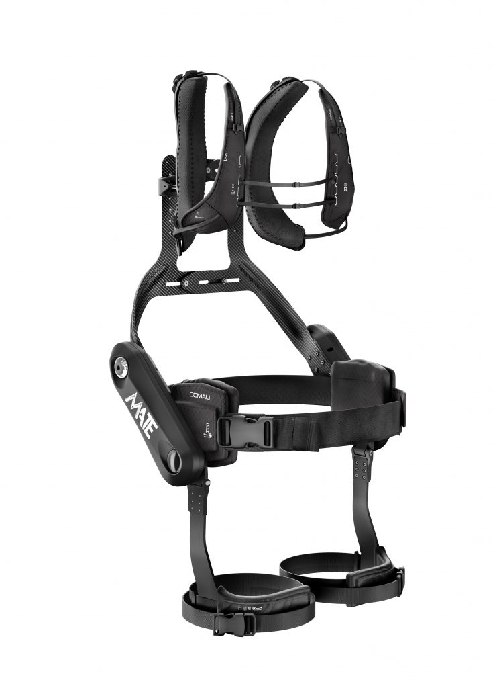
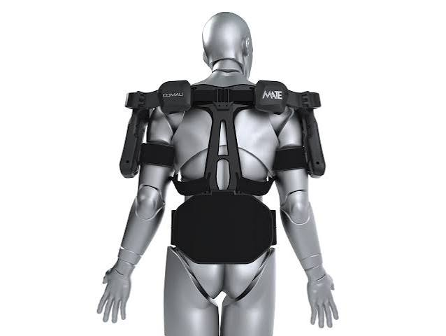
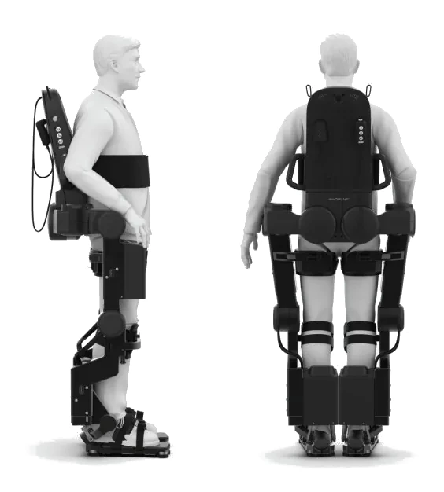

L'Évolution des Exosquelettes Intelligents
Dans le cadre de mon BTS SIO, je réalise une veille technologique sur l'évolution des exosquelettes intelligents, de la mécanique rigide vers l'intégration de l'Intelligence Artificielle.
⏳ L'angle d'attaque : L'évolution chronologique de la technologie
La Vague 1 : Les Exosquelettes Passifs (Années 2000 - 2010)
- La technologie : Pas de moteur, pas d'électronique. Ce sont des systèmes de ressorts, de vérins à gaz ou de contrepoids.
- Le but : Soulager le poids ou assister un mouvement répétitif (souvent dans l'industrie ou l'armée).
- La limite : L'exosquelette ne "réfléchit" pas. Si tu t'arrêtes, il pousse quand même. Il peut être inconfortable et fatiguer d'autres muscles.
La Vague 2 : Les Exosquelettes Actifs et Rigides (Années 2010 - 2020)
- La technologie : Moteurs électriques et structures métalliques lourdes.
- Le but : Supporter de lourdes charges ou forcer le mouvement des membres inférieurs.
- La limite : Manque d'adaptabilité en temps réel, l'humain doit suivre le rythme imposé par la machine.
La Vague 3 : Les Exosuits Textiles et l'IA Embarquée (Aujourd'hui)
- La technologie : Tissus légers, câbles et capteurs connectés (IoT) gérés par une Intelligence Artificielle.
- Le but : Analyser la marche en temps réel pour assister le mouvement de façon naturelle.



🤖 Les technologies d'exosquelettes connectés
Ces dispositifs robotisés s'appuient sur la synergie entre des algorithmes d'IA, des systèmes de détection miniatures et des actionneurs motorisés. Cet ensemble permet d'étudier l'activité motrice en direct afin de démultiplier la puissance physique ou de restaurer l'autonomie de l'individu.
Mécanismes et innovations
- Analyse prédictive et capteurs : Le système informatique intégré étudie en continu la posture et le rythme de marche. Il anticipe ainsi les intentions de l'utilisateur pour moduler instantanément l'aide mécanique, que ce soit pour gravir des marches, descendre ou accélérer le pas.
- Contrôle par la pensée (ICM) : Les prototypes les plus sophistiqués intègrent des connexions neuronales directes. Ils offrent la possibilité de piloter la structure par l'activité cérébrale ou via des instructions orales, une avancée cruciale pour les personnes atteintes de paralysies sévères.
Secteurs clés d'utilisation
- Santé, rééducation et autonomie : Dans le secteur médical, des structures innovantes à l'image de Wandercraft conçoivent des systèmes de marche robotisés pour redonner de la mobilité aux patients paraplégiques. En parallèle, des entreprises comme Reev proposent des appareillages plus discrets et articulés pour accompagner la rééducation du genou au quotidien.
- Secteur industriel et manutention : Pour les métiers de la logistique, des technologies comme le modèle Exia conçu par German Bionic soutiennent les opérateurs lors du port de colis lourds. Ce dispositif intègre un assistant virtuel intelligent qui surveille les postures afin de limiter les risques de blessures et de troubles articulaires.
Après avoir analysé les concepts théoriques de ma veille, nous allons maintenant étudier leur mise en œuvre concrète sur le marché. Pour cela, je vais vous présenter la gamme d'exosquelettes légers de l'entreprise Hurotics. Nous allons voir comment cette structure décline ses technologies à travers trois modèles spécifiques : le H-Medi pour le milieu clinique, le H-Flex pour le maintien à domicile, et le H-Fit dédié à la performance sportive:
| Critère/ Modèle | H-Medi | H-Flex | H-Fit |
| Usage Clinique / Médical | X | - | - |
| Usage Domicile / Senior | - | X | - |
| Usage Sportif / Fitness | - | - | X |
| Poids léger inférieur à (1 kg) | - | X | X |
| Force élevée (220N) | X | - | - |
| Rapports d'analyse (IA) | X | - | X |
| Mode Résistance active | - | - | X |
| Coût abordable (Grand public) | - | X | - |
Les points forts généraux de la gamme HUROTICS
- Légèreté et ergonomie textile : L'abandon du métal permet d'obtenir des modules ultra-légers (entre 0,6 kg et 4,5 kg selon les modèles), réduisant drastiquement la fatigue liée au port de l'équipement.
- Intelligence Artificielle et algorithme prédictif : râce à des capteurs IMU intégrés, une IA analyse la démarche de l'utilisateur en temps réel. Elle applique le principe du « Assist-as-needed », ce qui signifie qu'elle n'injecte de la force que lorsque le muscle en a réellement besoin, évitant ainsi l'atrophie musculaire
Les points faibles et limites technologiques
- Capacité de charge maximale limitée : N'ayant pas de structure rigide pour soutenir le corps, le système de câbles souples assiste le mouvement mais ne peut pas porter le poids total d'un utilisateur. Il est inutile pour les cas de paraplégie complète.
- Faible autonomie de batterie : Avec environ 2 heures d'autonomie en utilisation continue, l'appareil est limité à des séances ciblées et reste difficilement exploitable pour une journée complète en extérieur sans batterie de rechange.
📺 Démonstration vidéo du H-Medi Extension
Visionner la vidéo directement sur YouTube ➡️🥊 Les concurrents d'HUROTICS : Le pionnier de l'interface neuronale
Cyberdyne est la référence historique mondiale dans le domaine de la rééducation hospitalière avec sa gamme HAL (Hybrid Assistive Limb).
- Différence informatique : Contrairement à HUROTICS qui analyse la force mécanique de la démarche via des capteurs d'accélération (IMU), Cyberdyne utilise des électrodes cutanées (EMG) qui captent directement les signaux bioélectriques envoyés par le cerveau vers les muscles. Le robot anticipe le mouvement avant même que le membre ne bouge
- Limite face à HUROTICS : Les dispositifs HAL sont des structures rigides beaucoup plus lourdes (environ 9 à 14 kg) et extrêmement complexes à paramétrer, là où HUROTICS mise sur une combinaison textile légère de moins de 4,5 kg enfilable en 2 minutes.
📺 Démonstration vidéo de Cyberdyne
Visionner la vidéo directement sur YouTube ➡️Hypershell (Modèles X et Pro - Chine) : L'exosquelette grand public à bas coût
Hypershell bouscule le marché avec des modèles pliables et grand public (comme le Hypershell X Pro) destinés à la randonnée, au transport de charges et au fitness.
- Différence technologique : Hypershell propose une structure intermédiaire "articulée rigide" compacte qui se fixe uniquement sur les hanches et les cuisses, pesant seulement 2 kg. Propulsé par un processeur IA qui prédit la foulée, il offre un rapport puissance/poids massif (jusqu'à 800W d'assistance et 30 kg d'allègement de charge).
- Avantage économique : Vendu dans une fourchette grand public très agressive (autour de 1 500 $), il concurrence directement le modèle H-Fit d'HUROTICS sur le terrain du sport et du grand public.